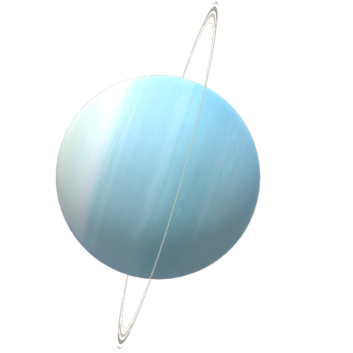

Uranus, den första moderna planeten, upptäcktes av William Herschel år 1781 med ett hemgjort teleskop. Den har en extrem lutning på 98 grader, vilket innebär att den bokstavligen rullar runt solen på sin sida och har årstider som varar i 21 år på grund av dess 84-åriga omloppstid. Planetens system med 11 ringar, upptäckta 1977, är tunna och ibland svåra att se på grund av Uranus kraftiga lutning. Dess blekblå-gröna färg, som beror på metangas i atmosfären, kan ses genom amatörteleskop och skapas av gasens reflektion av blått och grönt ljus efter att absorbera rött ljus.
